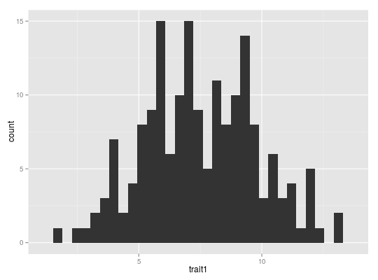
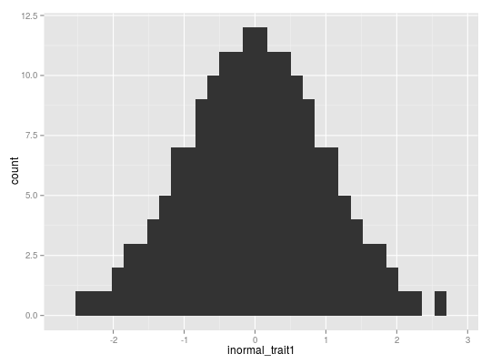

transformTrait(x, transform, mult = 1, ...)
availableTransforms function.transform_trait_* functions.
Possible parameters might be log.base, log.intercept ("log" transformation).Transform a trait.
library(plyr) library(ggplot2) data(dat30) dat <- mutate(dat30, inormal_trait1 = transformTrait(trait1, "inormal")) ggplot(dat, aes(trait1)) + geom_histogram()stat_bin: binwidth defaulted to range/30. Use 'binwidth = x' to adjust this.
ggplot(dat, aes(inormal_trait1)) + geom_histogram()stat_bin: binwidth defaulted to range/30. Use 'binwidth = x' to adjust this.